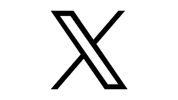

|
Zhenyu "Allen" Zhang Hi there! I'm a second-year Ph.D. student at UT Austin, advised by Prof. Zhangyang "Atlas" Wang. I also work closely with Prof. Beidi Chen at CMU. My reserach focuses on efficient and reliable machine learning systems, specifically in the following topics:
/ /  / / |
News
|
Selected Publications (full list) |
|
H2O: Heavy-Hitter Oracle for Efficient Generative Inference of Large Language Models NeurIPS 2023 / Paper / Blog / Code / Media (AI era/新智元) Q-Hitter: A Better Token Oracle for Efficient LLM Inference via Sparse-Quantized KV Cache MLSys 2024 / Paper / Code Merge, Then Compress: Demystify Efficient SMoE with Hints from Its Routing Policy Pingzhi Li, Spotlight Presentation JoMA: Demystifying Multilayer Transformers via JOint Dynamics of MLP and Attention Yuandong Tian, Yiping Wang, QuantumSEA: In-Time Sparse Exploration for Noise Adaptive Quantum Circuits Tianlong Chen, Sparse MoE as the New Dropout: Scaling Dense and Self-Slimmable Transformers Tianlong Chen*, Spotlight Presentation Sparsity May Cry: Let Us Fail (Current) Sparse Neural Networks Together! Shiwei Liu*, Tianlong Chen*, Spotlight Presentation Sparse Winning Tickets are Data-Efficient Image Recognizers Mukund Varma T, Xuxi Chen, NeurIPS 2022 / Paper / Code Spotlight Presentation Sparsity Winning Twice: Better Robust Generalization from More Efficient Training Tianlong Chen*, Efficient Lottery Ticket Finding: Less Data is More Robust Overfitting May be Mitigated by Properly Learned Smoothening Tianlong Chen*, |
Work Experience |
|
Reserach Intern, Sep. 2023 - Present Advisor: Dr. Zhewei Yao Dr. Xiaoxia Wu |
|
|
Lawrence Livermore National Laboratory Reserach Intern, May. 2023 - Aug. 2023 Advisor: Dr. Bhavya Kailkhura Dr. Brian Bartoldson Dr. James Diffenderfer |
Services |

{kind=link}